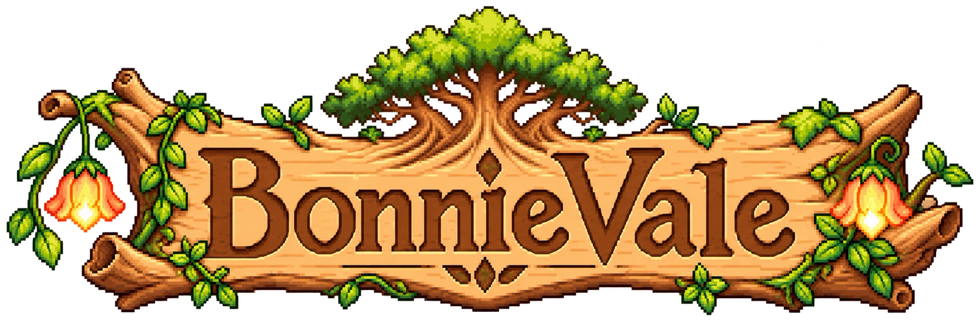
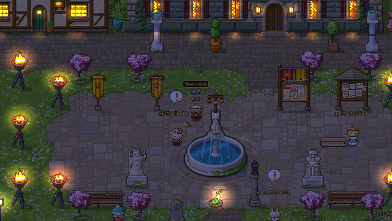
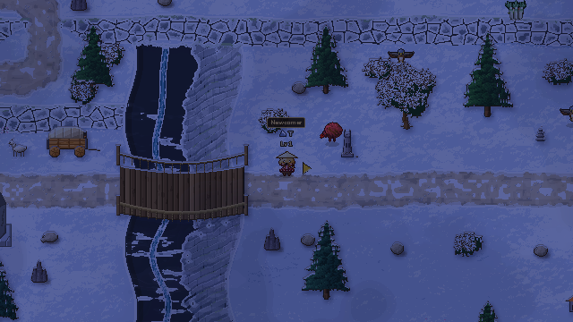
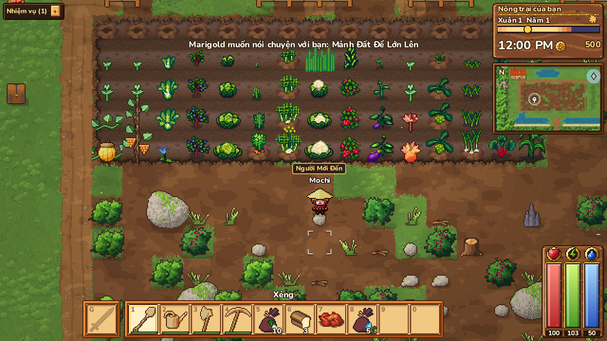
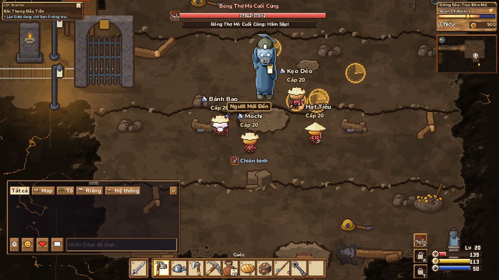
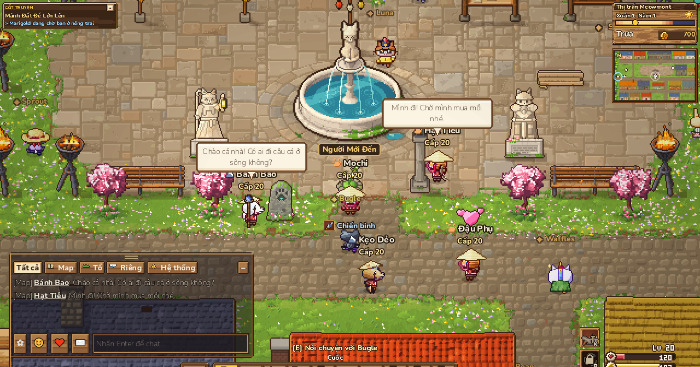
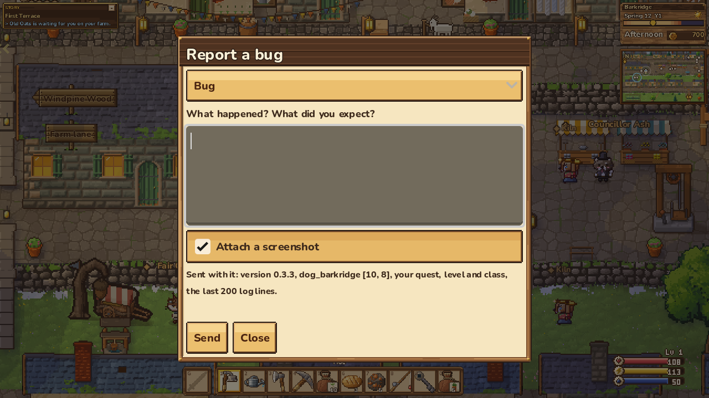

Nông trại và phiêu lưu pixel, chơi chung với mọi người trong một thung lũng. Làm ruộng, học nghề, rồi lập tổ đội hạ những con boss biết ra chiêu.
Một thung lũng, hai xứ
Bạn bắt đầu ở Xứ Mèo hoặc Xứ Chó. Mỗi xứ có quê nhà, cốt truyện, dân làng và hầm ngục riêng. Đi đủ xa, bạn sẽ gặp người chơi của xứ kia.



Ruộng của riêng bạn, theo bốn mùa
Cuốc, gieo, tưới và thu hoạch hàng chục loại cây. Học nghề với các thầy trong làng: trồng trọt, bào chế, nấu ăn, rèn, câu cá, đào mỏ. Mỗi bậc nghề mở thêm hạt giống và công thức mới.

Lập tổ đến bốn người, hạ boss cùng nhau
Bốn lớp nhân vật, mỗi lớp ba nhánh chuyên sâu. Boss báo đòn bằng vạch đỏ, vòng đỏ và đổi cách đánh theo lượng máu. Hộ Vệ các tầng hầm ngục và boss săn được đánh chung theo tổ, máu boss tăng theo số người.

Mọi người cùng ở một thung lũng
Đăng nhập một tài khoản, nhân vật và nông trại lưu trên máy chủ. Bạn thấy người chơi khác đi lại, đánh quái và đánh boss săn ngay trên bản đồ. Ngày đêm và mùa trôi theo giờ thật của máy chủ.
Tải bản tester
Yêu cầu máy
- Windows 10 hoặc 11, bản 64-bit.
- Card đồ họa hỗ trợ OpenGL 3.3 (hầu hết máy từ 2012 trở lại đây).
- Có kết nối mạng ổn định: game chơi online, không chơi được khi mất mạng.
- Bàn phím và chuột. Có hỗ trợ tay cầm.
Cách cài
- Tải file .zip, bấm chuột phải chọn Extract All để giải nén cả thư mục. Đừng chạy thẳng trong file zip.
- Chạy Bonnievale.exe. Nếu Windows hiện "Windows protected your PC", bấm More info rồi Run anyway. Game chưa được ký số nên Windows cảnh báo, chuyện bình thường với bản thử nghiệm.
- Khi có bản mới, game sẽ báo ngay ở màn đăng nhập và đưa bạn về trang này để tải.
Lần đầu chơi
- Ở màn đăng nhập, bấm Tạo tài khoản bằng email và mật khẩu từ 8 ký tự.
- Tạo nhân vật: chọn tên, ngoại hình, trang phục, và xứ bắt đầu là Xứ Mèo hoặc Xứ Chó.
- Đi theo đom đóm và thẻ Tiếp theo ở góc màn hình. Người có dấu ! trên đầu đang có việc cho bạn.
- Đổi ngôn ngữ ở Esc → Settings → Display → Language.
Gặp lỗi? Nhấn F8
F8 mở hộp báo lỗi ngay trong game. Viết điều đã xảy ra và điều bạn mong đợi, giữ ô "Đính kèm ảnh chụp" nếu muốn, rồi bấm Gửi. Báo lỗi gửi kèm phiên bản, chỗ bạn đứng, nhiệm vụ, cấp, lớp và 200 dòng log cuối để đội sửa nhanh hơn.

Đây là bản thử nghiệm sớm: chắc chắn còn lỗi, máy chủ có thể tắt để bảo trì, và dữ liệu nhân vật có thể được làm mới trước khi game ra mắt chính thức.